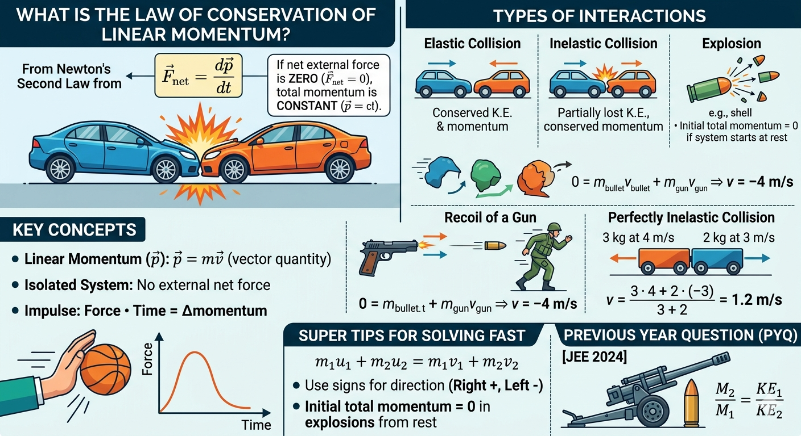

Law of Conservation of Linear Momentum and Its Applications

Image generated by Google AI
What Is the Law of Conservation of Linear Momentum?
You might have noticed a cricket ball hitting a bat, two bikes slightly colliding in traffic, or even just pushing a shopping cart. At first glance, these seem like ordinary events. But if you pause and observe carefully, there is a hidden rule quietly governing all these interactions. That rule is what we call momentum conservation.
The Law of Conservation of Linear Momentum is a fundamental principle of physics that arises directly from Newton’s Second Law of Motion.
In fact, if you have ever wondered how Newton’s laws actually “control” motion, this is one of the deepest outcomes of those laws, not just describing motion, but predicting what must remain unchanged in any interaction.
According to the second law:
\[ \vec{F}_{\text{net}} = \frac{d\vec{p}}{dt} \]
where \( \vec{F}_{\text{net}} \) is the net external force on a system, and \( \vec{p} = m\vec{v} \) is the linear momentum.
Pause for a moment and reflect: this equation tells us something profound. Force doesn’t directly control velocity, it controls how momentum changes with time. That’s why in real-life situations involving large masses (like trucks), even small velocity changes require huge forces.
If the net external force acting on a system is zero, i.e.,
\[ \vec{F}_{\text{net}} = 0 \]
then,
\[ \frac{d\vec{p}}{dt} = 0 \Rightarrow \vec{p} = \text{constant} \]
This means the total linear momentum of an isolated system (no external forces) remains conserved over time.
In simple words: if nothing from outside interferes, the “total motion content” of the system cannot change. It can move around internally, redistribute, but the total stays fixed.
It holds true for all types of interactions, collisions, explosions, and more, provided the system is closed and isolated.
In mathematical form, for a two-body system:
\[ m_1 u_1 + m_2 u_2 = m_1 v_1 + m_2 v_2 \]
Here,
- \( m_1, m_2 \): Masses of the objects
- \( u_1, u_2 \): Initial velocities
- \( v_1, v_2 \): Final velocities
This equation is like a “before vs after” balance sheet of motion. Whatever momentum existed initially must reappear afterward, just possibly redistributed between objects.
Key Concepts and Definitions
- Linear Momentum (\( \vec{p} \)):
\[ \vec{p} = m \vec{v} \]
A vector quantity representing motion. Direction is the same as velocity.
Notice something subtle here: momentum depends on both mass and velocity. That's why a slowly moving truck can feel more “powerful” than a fast-moving cricket ball, it carries more momentum.
- Isolated System: A system not influenced by any external net force.
In real life, perfectly isolated systems are rare. But we often approximate, like during a quick collision, external forces (like friction or gravity) have negligible effect in that tiny time interval.
- Impulse:
\[ \text{Impulse} = F \cdot \Delta t = \Delta p \]
The product of force and time equals change in momentum.
This is why airbags in cars work, they increase the time of impact, reducing force while keeping the same momentum change.
- Elastic Collision: Both momentum and kinetic energy are conserved.
- Inelastic Collision: Only momentum is conserved; kinetic energy is partially lost.
- Perfectly Inelastic Collision: Maximum kinetic energy is lost; objects stick together after collision.
Think of a rubber ball bouncing (elastic) versus clay sticking to the ground (inelastic). Momentum survives both, but energy behaves differently.
Shortcut Concepts
- Momentum is conserved only when \( \vec{F}_{\text{ext}} = 0 \).
- Internal forces do not affect total momentum of a system.
- Total momentum before and after interaction is the same in an isolated system.
- In explosions, initial total momentum is often zero if system starts at rest.
- Direction is crucial: Always assign appropriate signs to velocities.
A helpful mental trick: imagine momentum like money being exchanged between objects. Internal transfers don’t change total wealth, but external input/output does.
Examples
- Recoil of a Gun: A gun of mass 5 kg fires a bullet of mass 0.05 kg with velocity 400 m/s. Find recoil velocity of the gun.
- Perfectly Inelastic Collision: A 3 kg cart moving at 4 m/s collides head-on with a 2 kg cart moving at 3 m/s in opposite direction. They stick together after collision.
Before firing, everything is still. But the moment the bullet shoots forward, the gun must move backward, this is not optional, it’s required by physics.
\[ \text{Initial momentum} = 0 \quad (\text{system at rest}) \]
\[ 0 = m_{\text{bullet}} v_{\text{bullet}} + m_{\text{gun}} v_{\text{gun}} \Rightarrow 0 = (0.05)(400) + 5(v) \Rightarrow v = -4\,\text{m/s} \]
Negative sign indicates recoil in opposite direction.
This is exactly why holding a gun requires stability, the backward motion (recoil) is a direct consequence of momentum conservation.
This is like two people bumping into each other and then walking together afterward, their motions combine.
\[ m_1 = 3\,\text{kg},\ u_1 = 4\,\text{m/s}; \quad m_2 = 2\,\text{kg},\ u_2 = -3\,\text{m/s} \]
\[ \text{Initial momentum} = 3 \cdot 4 + 2 \cdot (-3) = 12 - 6 = 6\,\text{kg m/s} \]
\[ \text{Combined mass} = 5\,\text{kg} \Rightarrow v = \frac{6}{5} = 1.2\,\text{m/s} \]
Even though energy is lost (maybe as heat or deformation), momentum remains perfectly balanced.
Concept Questions with Explanations
- Why is momentum conserved in absence of external forces?
Because \( \vec{F}_{\text{ext}} = \frac{d\vec{p}}{dt} \). If \( \vec{F}_{\text{ext}} = 0 \), then \( \frac{d\vec{p}}{dt} = 0 \Rightarrow \vec{p} = \text{constant} \). - What role does direction play in momentum?
Momentum is a vector, so the direction must be considered. Opposite directions imply opposite signs. - Does momentum conservation apply in all collisions?
Yes, provided there are no external forces. However, kinetic energy may or may not be conserved. - What is the momentum of a system at rest?
Zero. But after internal action (like explosion), individual parts may move, yet total momentum remains zero. - In which situations is impulse useful?
Impulse is useful when force is not constant. It relates directly to the change in momentum.
So conservation is not a separate law, it is actually a direct consequence of Newton’s second law. That's the beauty of physics: fewer laws, deeper implications.
This is where many mistakes happen. Ignoring direction is like ignoring debit vs credit in accounting, it breaks the whole balance.
Imagine a firecracker bursting mid-air—pieces fly in all directions, but the overall momentum still sums to zero if it started from rest.
Super Tips for Solving Fast
- Use momentum conservation:
\[ m_1 u_1 + m_2 u_2 = m_1 v_1 + m_2 v_2 \]
- For perfectly inelastic collision:
\[ v = \frac{m_1 u_1 + m_2 u_2}{m_1 + m_2} \]
- Treat direction using signs. Rightward (positive), Leftward (negative).
- In explosion problems, momentum before = 0 if system was at rest.
- For 2D problems (like oblique collisions), break momentum into x and y components and apply conservation separately.
A powerful extension: in two dimensions, momentum conservation becomes:
\[ \sum p_x^{\text{initial}} = \sum p_x^{\text{final}}, \quad \sum p_y^{\text{initial}} = \sum p_y^{\text{final}} \]
This is especially useful in real-world scenarios like billiards or particle collisions.
Previous Year Questions (PYQs)
Q1.
An artillery piece of mass \( M_1 \) fires a shell of mass \( M_2 \) horizontally. Instantaneously after the firing, the ratio of kinetic energy of the artillery and that of the shell is:
(JEE 2024)
- \( \frac{M_1}{M_1 + M_2} \)
- \( \frac{M_2}{M_1} \)
- \( \frac{M_1}{M_2} \)
- \( \frac{M_2}{M_1 + M_2} \)
Solution:
Given:
- Mass of artillery = \( M_1 \)
- Mass of shell = \( M_2 \)
- Initially, the system is at rest. After firing, due to conservation of momentum, both move in opposite directions.
This is a classic recoil-energy comparison problem—notice how a lighter object ends up with more kinetic energy even though momentum is shared.
Let:
- Velocity of shell after firing = \( v \)
- Recoil velocity of artillery = \( V \)
By the law of conservation of linear momentum, initial momentum is zero (system was at rest):
\[ M_1 (-V) + M_2 v = 0 \Rightarrow M_1 V = M_2 v \Rightarrow V = \frac{M_2}{M_1} v \]
Now, calculate the kinetic energies:
- K.E. of artillery:
\[ KE_1 = \frac{1}{2} M_1 V^2 = \frac{1}{2} M_1 \left( \frac{M_2}{M_1} v \right)^2 = \frac{1}{2} \cdot \frac{M_2^2}{M_1} v^2 \]
- K.E. of shell:
\[ KE_2 = \frac{1}{2} M_2 v^2 \]
Take the ratio \( \frac{KE_1}{KE_2} \):
\[ \frac{KE_1}{KE_2} = \frac{\frac{1}{2} \cdot \frac{M_2^2}{M_1} v^2}{\frac{1}{2} M_2 v^2} = \frac{M_2}{M_1} \]
Notice the deeper insight: even though both objects have equal and opposite momentum, kinetic energy depends on velocity squared—so lighter objects carry more energy.
Answer: \( \boxed{\frac{M_2}{M_1}} \)